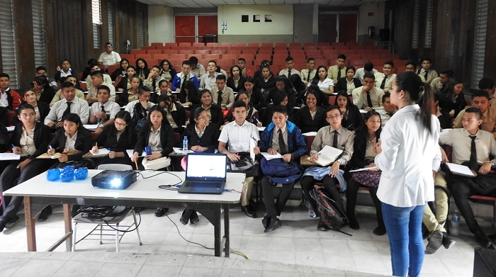
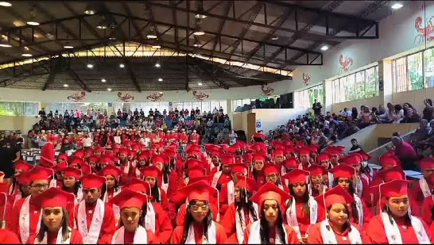

Noticias Destacadas
Inframen celebra "Señorita INFRAMEN"
25-09-2025 - Redacción Inframen
El Instituto Nacional Francisco Menéndez celebró el evento "Señorita INFRAMEN".
Matricula para estudiantes de noveno grado
01-09-2025 - Redacción Inframen
Los estudiantes de noveno grado ya pueden llenar la ficha de inscripción al inframen.

Ir
Jornada de Orientación Vocacional
20-09-2025 - Redacción Inframen
Estudiantes de bachillerato participaron en charlas sobre opciones universitarias y técnicas.
Entrega de Reconocimientos Académicos
01-10-2025 - Redacción Inframen
Se reconoció a los estudiantes con mejor rendimiento académico del ciclo 2025.
Inauguración de Laboratorio de Ciencias
10-09-2025 - Redacción Inframen
El instituto inauguró un moderno laboratorio para prácticas de física y química.
Festival Artístico INFRAMEN 2025
05-09-2025 - Redacción Inframen
Alumnos presentaron obras de teatro, música y danza en el festival anual del instituto.

Visita de Autoridades Educativas
28-08-2025 - Redacción Inframen
El instituto recibió la visita de autoridades del Ministerio de Educación para conocer los avances en infraestructura.
Taller de Robótica para Estudiantes
15-08-2025 - Redacción Inframen
Alumnos participaron en un taller de robótica, aprendiendo sobre programación y construcción de robots.

Campaña de Salud Escolar
01-08-2025 - Redacción Inframen
Se realizó una campaña de salud para promover hábitos saludables entre los estudiantes.